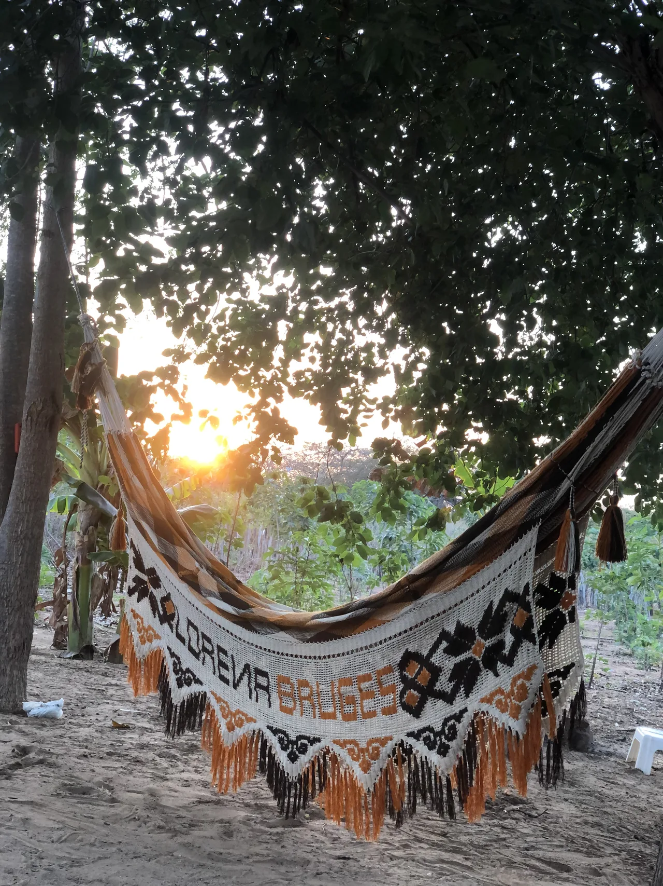
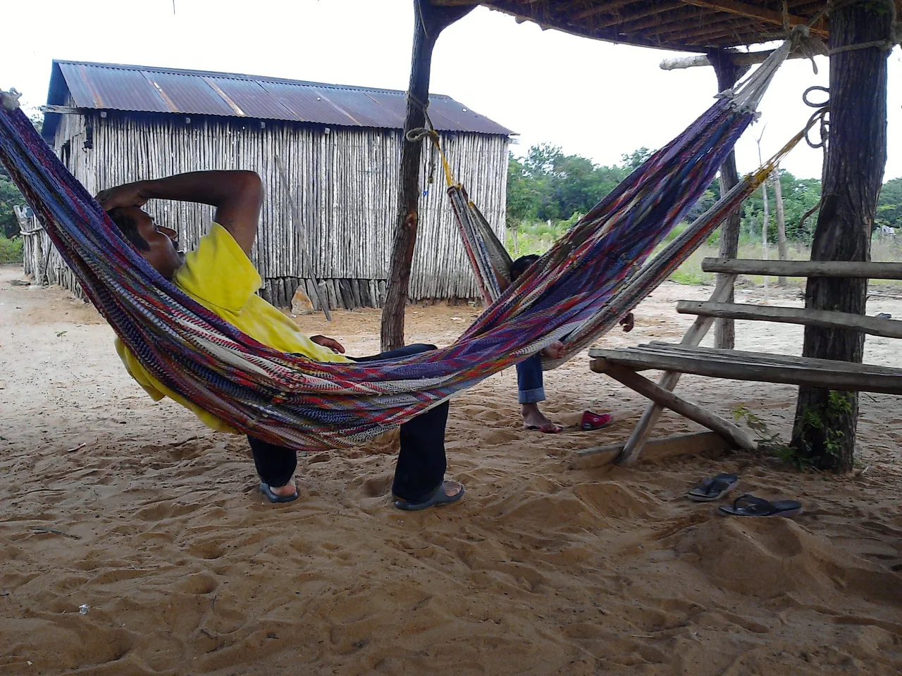

En la aridez implacable de la península de La Guajira, la mujer wayúu levanta un telar vertical entre dos horcones de madera para tejer una arquitectura de hilos que sostiene el cuerpo en el aire. Una indagación sobre el chinchorro, la araña Wale'kerü y el habitar ingrávido del desierto.
Quien contempla por primera vez el paisaje de la península de La Guajira, donde la tierra se calcina bajo un sol despiadado de mediodía y el mar Caribe muerde las dunas con un oleaje salobre y espeso, se pregunta de inmediato cómo es posible sostener la vida humana en un desierto que parece expulsar todo arraigo sedentario. No hay sombra natural en leguas a la redonda, salvo la silueta espinosa de los cujíes y los cardonales que arañan el viento; la tierra no retiene el agua dulce y el suelo se agrieta en costras de salitre que abrasan la planta de los pies. En esa vastedad de viento y horizonte, el pueblo Wayúu no inventó palacios de piedra ni murallas de mampostería para protegerse del rigor atmosférico: inventó una superficie ingrávida de algodón suspendida entre dos horcones que permite habitar el aire sin tocar el polvo del suelo.

Esa superficie es el chinchorro, una prenda que el pensamiento occidental suele confundir con la hamaca corriente de lona o de malla playera, pero que en el mundo indígena constituye un verdadero territorio mental y doméstico, un capullo de intimidad, sueño y ritual donde el ser humano nace, engendra, descansa de las fatigas del pastoreo y finalmente es velado durante los días solemnes de su muerte comunitaria. A diferencia de la hamaca tradicional, tejida con una trama cerrada y uniforme, el chinchorro fino wayúu se confecciona mediante la técnica del tejido de resorte o punto de ojal suelto, una estructura de hilos cruzados que cede con elasticidad ante el peso del cuerpo y se adapta con suavidad a cada vértebra de la espalda, permitiendo que la brisa nocturna circule a través de sus poros como si el durmiente flotara en medio de una corriente marina.
Para confeccionar este artefacto, la tejedora levanta en el patio de su ranchería un telar vertical compuesto por dos maderos gruesos clavados en la arena y dos varas transversales de mangle o pino entre las que se urde la madeja continua de hilo. No hay lanzadera mecánica ni poleas de pedal: la mujer trabaja de pie o sentada en un banco bajo, empujando los hilos con sus dedos y apretando la trama con una pesada paleta de madera pulida llamada sirapa. Cada golpe de la sirapa es un latido sonoro que marca las horas del día; mientras el sol recorre el cielo del desierto, la mujer teje en silencio, acompañada únicamente por el balido lejano de los chivos y el zumbido constante de los vientos alisios que bajan del nordeste.
La mitología wayúu atribuye el origen de este saber a un ser legendario llamado Wale'kerü, una araña doncella que según los ancianos enseñó a las primeras mujeres a tejer antes de que la memoria se hiciera palabra escrita. Cuenta la tradición que Wale'kerü tejía durante las noches fajas y mochilas de belleza incomprensible arrojando el hilo por su boca, y que cuando una joven wayúu entraba en el encierro ritual de la pubertad —esa reclusión de varios meses en la que las muchachas aprenden los secretos de la feminidad, la medicina vegetal y el linaje materno—, la araña le tomaba las manos para transmitirle la ligereza de sus patas y la paciencia necesaria para no enredar jamás la cuenta de los hilos.
En el telar wayúu la geometría es un lenguaje del pensamiento abstracto que las artesanas llaman kanasü. Los kanasü son figuras lineales complejas, en su mayoría rombos escalonados, triángulos superpuestos y grecas en zigzag, que se van dibujando en las cenefas y en los anchos flecos colgantes que caen a ambos costados del chinchorro como una cortina de encaje suntuoso. Cada kanasü tiene nombre propio y encierra una observación minuciosa de la naturaleza: el molokonoutaya, que imita el dibujo geométrico del caparazón de la tortuga morrocoy; el pasuatalo'u, que reproduce las huellas que dejan los cascos de los burros en los senderos de arena; o el iwouya, la constelación de las Pléyades cuyo brillo en el cielo nocturno anuncia la llegada de las escasas lluvias de primavera.

Resulta profundamente revelador que en una sociedad matrilineal como la wayúu, donde el linaje, la sangre y el derecho a la tierra se transmiten exclusivamente por la línea de la madre, el tejido no sea considerado un oficio secundario o una mera labor doméstica, sino el fundamento mismo de la autoridad y del prestigio social. Una mujer que domina los kanasü más complejos es respetada como una sabia que conoce las leyes invisibles del cosmos; sus chinchorros son ofrecidos como compensación solemne en las disputas de sangre entre clanes o como dote matrimonial para sellar la paz entre familias rivales. El hilo no es una mercancía: es el cordón umbilical que ata a la comunidad con sus ancestros.
Observemos también los flecos o la falda del chinchorro, llamada barriga o faja lateral. Esta pieza, tejida aparte con ganchillo fino o con nudos de macramé, puede medir hasta medio metro de caída y demanda tantas semanas de trabajo como el cuerpo central del tejido. Su función no es puramente estética: al acostarse en el chinchorro, la persona puede extender esa ancha cortina de flecos hacia arriba y envolverse completamente en ella, creando un dosel protector que la aísla de los mosquitos, del sereno helado de la madrugada y de las miradas curiosas de quienes transitan por la enramada común. Es una casa portátil, un habitáculo privado que se pliega en un bulto ligero de tres kilos para ser montado sobre el lomo de una mula cuando la sequía obliga a la familia a trasladarse a otro pozo de agua.
En las últimas décadas, el turismo depredador y las tiendas de diseño de las grandes capitales han pretendido reducir esta cosmología a un objeto exótico de decoración para terrazas de lujo. Compran los chinchorros a precios irrisorios a través de intermediarios sin escrúpulos, cambian los colores tradicionales por gamas neutras dictadas por las modas europeas y borran los nombres de las tejedoras para poner en su lugar etiquetas de marcas comerciales contemporáneas. Pero en el corazón de la ranchería, lejos de los reflectores del mercado, la mujer wayúu sigue atando los hilos al telar vertical entre los dos horcones de madera. Sabe que mientras sus dedos recuerden el camino trazado por Wale'kerü, el desierto seguirá siendo su territorio soberano y su cuerpo encontrará siempre una hamaca suspendida en el aire donde soñar sin pedir permiso.
Fuentes.
- Pineda Camacho, Roberto (1979). El chinchorro y la vida cotidiana entre los wayúu. Revista Colombiana de Antropología.
- Jusayú, Miguel Ángel (1986). Mitos y leyendas wayúu: Las enseñanzas de Wale'kerü. Universidad Católica Andrés Bello.
- Friedemann, Nina S. de (1985). Tronos del descanso: La hamaca en las culturas del Caribe indígena. Fondo FEN.
Investigación etnográfica y documental sobre el tejido wayúu en la Alta y Media Guajira.
Fuentes consultadas el 19.11.2026. Análisis e interpretación: RUMMOR. Edición privada para revisión.